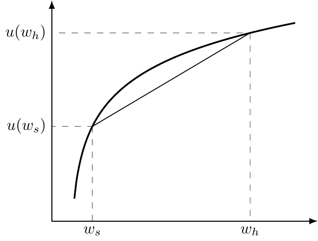

Understanding Risk
Motivation
- Health insurance is valuable because it reduces uncertainty.
- But how much is it worth to someone?
- Willingness to pay depends on:
- The size and likelihood of potential losses
- How people feel about risk (their preferences)
- The size and likelihood of potential losses
Our goal: build the tools (probability, expected value, utility) that explain why people pay more than expected costs for insurance.
Today’s Roadmap
- Describing Risk
- Probability
- Payoffs
- Expected value
- Preferences (utility)
- Probability
- Risk Preferences
- Averse, neutral, loving
- Concavity & expected utility (graphic)
- Averse, neutral, loving
- Why This Matters
- Intuition behind paying for insurance
- Foreshadow: the risk premium & WTP (next time)
- Intuition behind paying for insurance
Describing Risk
To understand risk in this class, we need four building blocks:
- Probability – how likely different outcomes are
- Payoffs – the monetary consequences of those outcomes
- Expected value – the probability-weighted average outcome
- Preferences – how people evaluate outcomes, often with a utility function
1. Probability
Definition: The likelihood that a given outcome will occur
Examples:
- 10% chance of heart disease in 10 years → 100 of 1,000 people like me will get sick
- 5% chance of a car accident in a year → 50 of 1,000 drivers will file a claim
In this class: two outcomes only — sick (probability \(p_s\)) or healthy (probability \(p_h = 1 - p_s\)).
2. Payoffs
Definition: the monetary value of each possible outcome
Example:
- Start with $1,000 in wealth
- If sick → pay $500 for care → \(w_s = 500\)
- If healthy → pay nothing → \(w_h = 1000\)
3. Expected Value
Definition: The probability-weighted average of possible payoffs
For two outcomes, \(x_1\) and \(x_2\), with probabilities \(p_1\) and \(p_2\):
\[E[x] = p_1 x_1 + p_2 x_2\]
Example: With 90% chance of \(w_h = 1000\) and 10% chance of \(w_s = 500\):
\[E[w] = 0.9 \times 1000 + 0.1 \times 500 = 950.\]
Example
What is my expected cost?
- Two possible outcomes: heart attack or no heart attack
- 10% chance of having a heart attack
- Cost of $100,000 if I have a heart attack (but I will survive and recover)
Answer
I will incur a cost of $100,000 with 10% probability. So my expected cost is just \(E[cost]=0.1*100,000 =\) 10,000.
4. Preferences
Definition: How individuals value different outcomes, often with a utility function \(u(w)\)
- Captures the benefit of wealth, not just the dollar amount
- Key idea: diminishing marginal utility
- Each extra dollar matters less when you already have more
Expected utility combines probabilities and utilities:
\[E[u(w)] = p_h u(w_h) + p_s u(w_s)\]
In-class Problem: Expected values and expected utility
An individual starts with a wealth of $100,000. With probability 0.3, they will get sick and incur a cost of $40,000.
- What is this person’s expected cost of illness?
- Assume this individual has a utility function of the form, \(u(w) = w^{0.20}\). What is this person’s expected utility?
- Calculate this person’s utility if they were to incur the expected cost of illness. Is this utility higher or lower than what you found in part (2)?
Risk preferences
With probabilities, payoffs, expected values, and utilities/preferences, we can now measure preferences toward risk (i.e., how people feel about uncertain outcomes).
- Risk averse: Prefer certainty to a risky gamble with the same expected value
- Risk neutral: Indifferent between the gamble and certainty
- Risk loving: Prefer the gamble to certainty
In economics, we usually assume people are risk averse.
Risk aversion
Risk aversion follows from diminishing marginal utility.
\(u'(x_{1}) > u'(x_{2})\) for \(x_{1} < x_{2}\)
What does this mean in words?
Why this matters
Say your utility function is \(u(w)=\sqrt{w}\) and that you’re starting with \(w=\) $100. I propose a lottery in which I flip a coin…heads you win $20 and tails you lose $20.
- What is the expected wealth in this lottery?
- What is your utility at expected wealth?
- What is the expected utility from this lottery?
- Which is higher: utility at expected wealth, or expected utility?
Answer
Expected wealth is simply \(\frac{1}{2} \times 80 + \frac{1}{2} \times 120 =\) 100, which yields a utility of \(u(w)=\) 10
But your expected utility is \(\frac{1}{2} \times u(w_{heads}) + \frac{1}{2} \times u(w_{tails}) = \frac{1}{2} \times \sqrt{80} + \frac{1}{2} \times \sqrt{120} =\) 9.95.
Because expected utility < utility at expected wealth, the lottery is less attractive than a sure outcome of the same expected value.
This gap is what we’ll later call the risk premium, and it’s the reason people are willing to pay extra for insurance.